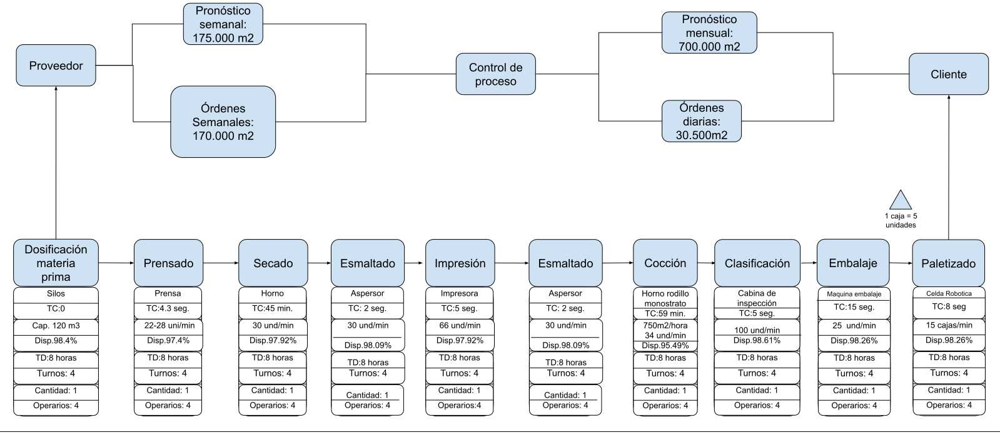

Diagramas de flujo de valor VSM
A continuación, se presentan dos diagramas de flujo de valor: uno correspondiente a la planta actual y otro a la planta propuesta. Estos diagramas ilustran de manera detallada los procesos operativos vigentes y las mejoras planeadas para aumentar la eficiencia en la producción cerámica.El diagrama de flujo de valor (VSM, por sus siglas en inglés) que presentamos a continuación ofrece una representación visual detallada del proceso de producción en la industria cerámica, abarcando desde la recepción de materiales del proveedor hasta la entrega final al cliente. Este VSM ilustra cómo los diversos componentes del proceso, como dosificación de materia prima, prensado, secado, esmaltado, cocción, clasificación y embalaje, están interconectados y cómo cada etapa contribuye al flujo general de producción.
VSM Actual
 mantener igual.svg)
VSM Propuesto
Horario Operarios
"Horarios de operarios" se muestra una tabla de planificación de turnos de trabajo para diferentes procesos en una planta de producción. La tabla está dividida en dos turnos (Turno 1 y Turno 2) y abarca las 24 horas del día, desde las 0 hasta las 22 horas. Cada fila representa un proceso específico (como Prensa, Secador, Esmaltadora, Impresora, etc.), y en cada fila se indica el horario de trabajo de los operarios asignados a ese proceso.
Los nombres de los operarios están indicados dentro de bloques de color que se solapan, asegurando así una continuidad en el trabajo y evitando tiempos muertos. Este solapamiento permite que mientras un operario finaliza su turno, otro ya ha comenzado, garantizando que siempre haya personal disponible para mantener la producción en funcionamiento sin interrupciones.
Arquitectura de la Red de Comunicaciones del Proyecto
La imagen proporcionada detalla la arquitectura de la red de comunicaciones de nuestro proyecto, estructurada según la pirámide de automatización industrial, un modelo esencial para organizar las tecnologías en la manufactura.
Niveles de la Pirámide de Automatización
Nivel 0: Control de Procesos
Nivel 1: Control de Sistemas
Nivel 2: Supervisión y Adquisición de Datos
Nivel 3: Integración y Gestión Empresarial
Esta estructura permite no solo la supervisión y control en tiempo real sino también la toma de decisiones basada en datos y la optimización de procesos, crucial en entornos de producción modernos.